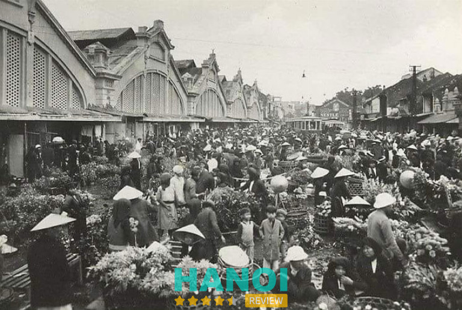
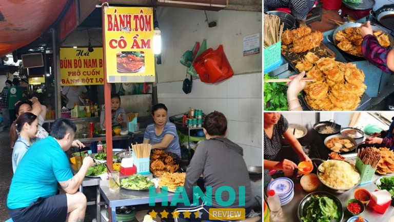
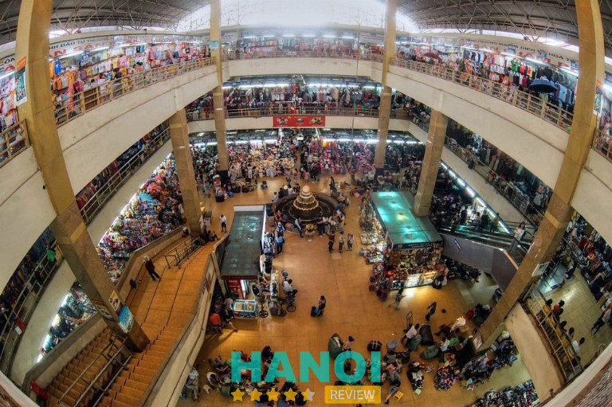
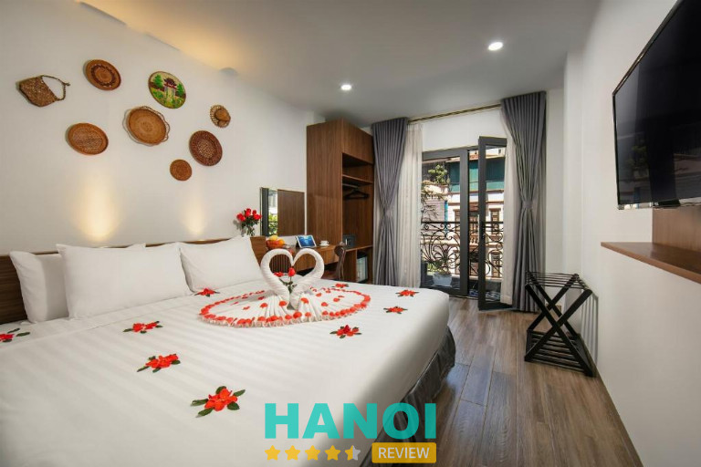
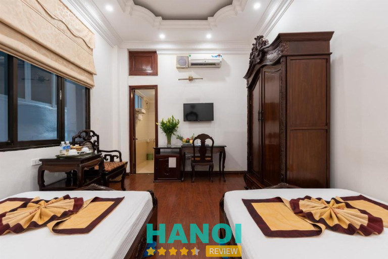
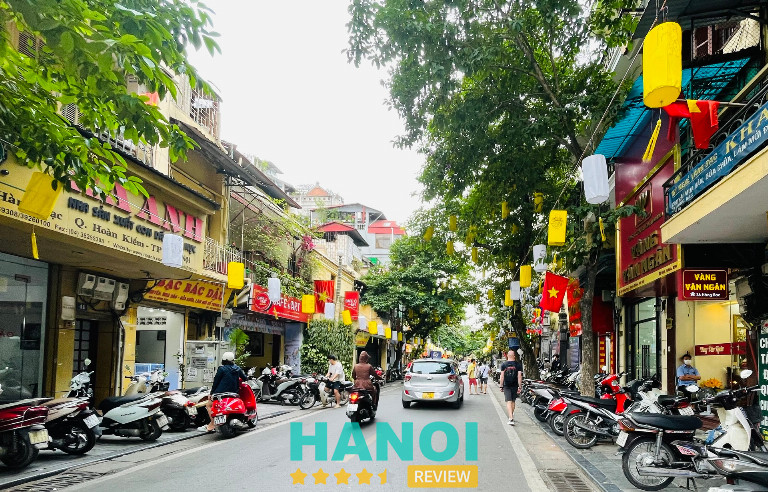
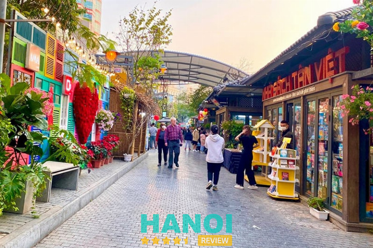

Chợ Đồng Xuân Hà Nội: Hành trình mua sắm và khám phá ẩm thực độc đáo
Chợ Đồng Xuân ở Hà Nội là điểm đến không thể bỏ qua khi khám phá thủ đô Việt Nam. Nơi này không chỉ là trung tâm buôn bán và giao thương sầm uất mà còn được biết đến như “thiên đường ẩm thực giữa lòng Hà Nội.” Đến đây, du khách có thể thưởng thức những món ngon và đặc sản tinh túy của người dân nơi đây.
Vài nét về chợ Đồng Xuân
Chợ Đồng Xuân, tọa lạc tại khu vực Phố Cổ Hà Nội, thuộc phường Đồng Xuân, quận Hoàn Kiếm, gần trung tâm Hồ Hoàn Kiếm khoảng 800 m và lân cận với phố Hàng Mã và ga Long Biên. Nằm giữa ngõ Đồng Xuân (về phía đông), phố Đồng Xuân (về phía tây), phố Hàng Khoai (về phía bắc) và phố Cầu Đông (về phía nam), chợ Đồng Xuân có sự lân cận độc đáo với chợ Bắc Qua, thường được gọi là chợ Bắc Qua – Đồng Xuân.
Mặc dù là một trong những khu chợ trẻ tuổi nhất so với các khu phố lân cận, chợ Đồng Xuân vẫn là trung tâm buôn bán động nhất tại Hà Nội, đặc biệt tập trung vào việc đổ mối và bán buôn.
Với 3 tầng lớn, chợ đa dạng về mặt hàng và đặc biệt rộng lớn, mang lại cho khách hàng sự thuận tiện khi tìm kiếm mọi loại sản phẩm, từ mua sỉ đến mua lẻ, với giá cả hợp lý và phải chăng.
Cách bài trí các gian hàng tại chợ được tổ chức một cách hợp lý:
- Tầng 1: Tập trung các cửa hàng quần áo, phụ kiện thời trang, giày dép, cùng các sản phẩm điện tử nhập khẩu từ Trung Quốc.
- Tầng 2: Là khu vực bán buôn và bán lẻ về vải và quần áo cho người lớn.
- Tầng 3: Được dành cho các cửa hàng bán quần áo và đồ dùng cho trẻ sơ sinh.
- Khu vực chợ Bắc Qua: Tập trung vào bán thực phẩm và các gian hàng ẩm thực hoạt động đến nửa đêm.
- Phía sau chợ: Các cửa hàng chuyên bán chim cá cảnh và động vật thú cảnh.
Ngoài ra, chợ cũng có các gian hàng bán lẻ với giá cả phải chăng, tạo nên không khí mua sắm sôi động và hấp dẫn. Khám phá Chợ Đồng Xuân là trải nghiệm không thể bỏ lỡ khi du lịch Hà Nội, nơi này mang đến sự độc đáo và phong cách riêng biệt của thị trấn nghệ thuật và văn hóa nổi tiếng này.
Lịch sử hình thành chợ Đồng Xuân
Theo lịch sửa ghi lại, trong quá trình xây dựng lại thành Thăng Long vào mùa hè năm 1804, Tổng trấn Nguyễn Văn Thành thành lập ra chợ Đồng Xuân ngày nay, đặt ở cửa chính phía Đông của thành. Đây là nơi mà triều đại quân chủ cuối cùng của Việt Nam – vua Gia Long – đã để lại dấu ấn.
Sau khi trở thành thuộc địa của thực dân Pháp vào năm 1888, chợ Đồng Xuân đã trải qua những biến động lớn. Đốc lý Landes Charles đã quyết định “dời chỗ” hai ngôi chợ cũ của Hà Nội, đưa chúng về hợp nhất tại chợ nhỏ trước cửa đền Huyền Thiên, thuộc phường Đồng Xuân, và đổi tên thành chợ Đồng Xuân năm 1890.

Chợ Đồng Xuân từng mở mỗi ngày, nhưng quy định nâng mức họp từ một lần mỗi tháng lên hai lần mỗi tháng, tăng thuế để duy trì hoạt động và xây dựng lại chợ. Cấu trúc chợ được xây dựng chắc chắn với khung gang nhập khẩu từ Pháp và mái lợp tôn để bảo vệ khỏi mưa và nắng.
Trải qua thời kỳ phồn thịnh, chợ Đồng Xuân không chỉ là nơi giao thương quan trọng mà còn là điểm đến của người dân địa phương và du khách quốc tế. Từ đầu thế kỷ 20, chợ đã chứng kiến sự đa dạng của hàng hóa, từ thực phẩm đến các sản phẩm nghệ thuật và văn hóa. Điều này tạo nên bức tranh sôi động và độc đáo, thu hút người mua sắm đến từ khắp nơi, bao gồm cả người nước ngoài.
Năm 1994, chợ Đồng Xuân trải qua một sự kiện đau lòng khi bị hỏa hoạn, nhưng nhờ vào sự tái tạo, chợ đã mở cửa trở lại và tiếp tục là điểm đến mua sắm quan trọng. Ngoài ra, chợ Đồng Xuân còn là một di tích chiến tranh đặc biệt, là nơi ghi chép những sự kiện quan trọng trong lịch sử, như trận đánh ngày 14/02/1947. Khi bạn ghé thăm chợ, hãy tìm đến phía Tây Bắc để khám phá đài Cảm Tử, kỷ niệm cho sự kiện quan trọng trong lịch sử kháng chiến của Hà Nội.
Thời gian hoạt động tại chợ Đồng Xuân
Giống như nhiều chợ khác, chợ Đồng Xuân mở cửa hàng ngày từ 6 giờ sáng đến 18 giờ chiều, tạo ra không gian mua sắm linh hoạt cho cả người dân địa phương và du khách. Riêng khu vực ẩm thực ở ngõ chợ mở cửa thậm chí cả đến rạng sáng hôm sau, tạo ra một không khí tràn ngập hương vị độc đáo và sôi động.
Điều đặc biệt là vào cuối tuần, từ Thứ Sáu đến Chủ Nhật, chợ Đồng Xuân mở cửa đến 22 giờ 30 phút, tạo điều kiện thuận lợi cho những ai muốn tham quan và mua sắm vào buổi tối. Đây không chỉ là nơi mua sắm mà còn là điểm du lịch hấp dẫn với không khí nhộn nhịp và đa dạng.
Chợ Đồng Xuân không chỉ là nơi mua sắm mà còn là “thiên đường” cho những người yêu thích xem và lựa chọn các sản phẩm. Các gian hàng trưng bày với màu sắc và họa tiết đa dạng, đặc biệt là những gian hàng vải, tạo nên một bức tranh màu sắc rực rỡ và phong cách độc đáo.
Khi bước vào chợ, bạn sẽ cảm nhận được sự năng động với sự tấp nập của người qua lại, tiếng nói chuyện rộn ràng, tạo nên một không gian sống độnh. Đây thực sự là địa điểm không chỉ thu hút du khách địa phương mà còn là điểm đến lý tưởng cho những người muốn trải nghiệm không khí chợ truyền thống của Hà Nội.
Hướng dẫn cách đi đến chợ Đồng Xuân
Để đến được chợ Đồng Xuân, du khách có nhiều lựa chọn nhiều phương tiện vận chuyển khác như xe máy, ô tô, taxi, và xe ôm công nghệ. Dưới đây là một số lộ trình di chuyển từ những điểm xuất phát khác nhau:
- Từ Hồ Hoàn Kiếm: Đi qua Quảng trường Đông Kinh Nghĩa Thục – phố Hàng Đào – đi qua ngã tư – đến cổng chợ Đồng Xuân.
- Từ Cầu Long Biên: Đi qua Cầu Long Biên – theo đường Trần Nhật Duật – qua phố Hàng Khoai – đến cổng chợ.
- Từ đường Quán Thánh: Đi qua Quán Thánh – theo đường Hàng Đậu – rẽ vào đường Nguyễn Thiếp – qua phố Hàng Khoai – đến cổng chợ.
Nếu du khách muốn sử dụng xe buýt, có nhiều tuyến có điểm dừng gần chợ, như tuyến số 01 (Bến xe Gia Lâm – Yên Nghĩa), số 04 (Bến xe Long Biên – Bến xe Nước Ngầm), số 08 (Bến xe Long Biên – Đông Mỹ), và các tuyến số 03, số 11, số 18, số 22, số 23, số 31, số 34, số 40 với lộ trình thuận tiện.
Ngay tại chợ Đồng Xuân, có dịch vụ giữ xe máy với giá khoảng 10.000 VND/chiếc. Du khách có thể an tâm gửi phương tiện cá nhân tại đây để thảnh thơi khám phá chợ và thực hiện mua sắm.
Ăn gì khi đến chợ Đồng Xuân
Chợ Đồng Xuân không chỉ là trung tâm mua sắm sôi động, mà còn được biết đến như một “thiên đường ẩm thực” tại Thủ đô Hà Nội. Khi bước vào không gian của chợ, du khách sẽ được đắm chìm trong một thế giới của hương vị đặc trưng và sự phong phú của ẩm thực đường phố Hà Nội.
Chợ Đồng Xuân không chỉ là nơi mua bán và trao đổi hàng hóa, mà còn là điểm đến lý tưởng để trải nghiệm ẩm thực đường phố. Tại những con ngõ nhỏ xung quanh chợ, du khách sẽ có cơ hội thưởng thức những món ngon từ mặn đến ngọt, mang đậm bản sắc văn hóa ẩm thực của đất đô thị này.

Những gian hàng ẩm thực nhỏ xinh tại chợ Đồng Xuân không ngừng mở cửa, phục vụ du khách cả vào ban ngày lẫn ban đêm. Các món ngon độc đáo như cháo sườn sụn, bánh tôm, bún ốc, bánh giò, bánh đúc, thịt xiên, chè… đều sẵn có với mức giá hấp dẫn từ 15.000 – 35.000 VNĐ/món.
Nếu bạn có ghé qua chợ Đồng Xuân chắc chắn không thể bỏ qua những quán ăn nổi tiếng sau đây:
- Bún riêu sườn sụn số 84 Nguyễn Thiếp.
- Bún chả que tre Cô Nga.
- Cháo sườn sụn ruốc bông Huyền Anh.
- Chè Hà Nội Cô Tuyết.
- Bánh mì chuột ở cổng chợ.
Hãy tận hưởng không khí sôi động và thưởng thức hương vị tinh tế của ẩm thực đường phố tại chợ Đồng Xuân – một trải nghiệm không thể bỏ lỡ khi ghé thăm Hà Nội.
Top sự đa dạng của các gian hàng tại chợ Đồng Xuân
Chợ Đồng Xuân, một trong những khu chợ đầu mối lớn nhất ở miền Bắc, đặc trưng bởi sự đa dạng của các mặt hàng, từ lương thực, thực phẩm, đến điện tử và hàng may mặc như quần áo, giày dép. Đây là nơi lý tưởng để tận hưởng trải nghiệm mua sắm với sự thoải mái trong việc lựa chọn sản phẩm phù hợp với nhu cầu và sở thích.

Ngõ Đồng Xuân, nằm cách chợ Đồng Xuân một đoạn ngắn, được biết đến như “con đường ẩm thực” với độ dài khoảng 200m. Nơi này tràn ngập quán xá với nhiều món ăn độc đáo, giá cả hợp lý và hương vị tuyệt vời. Những món đặc sản như bánh tôm, bún chả que tre, phở Tíu, bún ốc, chè, bánh giò, bánh đúc, bánh xu xê… tạo nên bức tranh ẩm thực độc đáo và đa dạng.
Chợ Đồng Xuân không chỉ là nơi mua sắm sôi động mà còn là điểm hội tụ của nét văn hóa và giá trị tinh thần. Khu chợ này là một phản ánh của cuộc sống và sinh hoạt hàng ngày của người dân, biến chợ từ một ngôi chợ cổ thành một đẹp lạ thường của Thủ đô. Đây là điểm đến không thể bỏ qua trong hành trình khám phá Hà Nội của du khách.
Các lựa chọn về chỗ ở gần Chợ Đồng Xuân
Để có những trải nghiệm tuyệt vời khi thăm Chợ Đồng Xuân và các điểm du lịch lân cận, khách du lịch nên xem xét chọn lựa chỗ ở tại các nhà nghỉ và khách sạn để nghỉ ngơi sau những hoạt động mệt mỏi. Dưới đây là những nhà nghỉ, khách sạn gần chợ Đồng Xuân bạn có thể tham khảo. Giá phòng đa dạng, phù hợp với mọi ngân sách và nhu cầu riêng, mang lại sự linh hoạt cho việc tìm kiếm điểm lưu trú ưng ý.
Marigold Hotel
Marigold Hotel đứng trong số những chỗ ở chất lượng, với mức giá dưới 1.000.000 VND. Với vị trí đắc địa và không gian phòng ốc sạch sẽ, tinh tế, nơi này sẽ mang đến cho bạn những khoảnh khắc nghỉ ngơi và thư giãn tuyệt vời nhất.
Địa chỉ: 12 phố Gầm Cầu, Đồng Xuân, Hoàn Kiếm.
Hanoi La Cascada House & Travel
Hanoi La Cascada House & Travel là một lựa chọn đáng xem xét khi bạn quyết định lưu trú tại quận Hoàn Kiếm, với giá chỉ từ 724.500 VND/đêm. Khách sạn này tạo ấn tượng mạnh với du khách bằng kiến trúc trang nhã và hiện đại, đồng thời mang lại trải nghiệm tuyệt vời với ban công rộng lớn với tầm nhìn đẹp mắt. Đặc biệt, Hanoi La Cascada cung cấp loại phòng Family dành cho gia đình với 4 người, làm tăng thêm sự thuận tiện cho nhóm đoàn.
Địa chỉ: 9 phố Gầm Cầu, Đồng Xuân, Hoàn Kiếm.

Hanoi Little Town Hotel
Hanoi Little Town tọa lạc tại trung tâm Phố Cổ, tiện lợi cho việc khám phá các địa điểm thú vị và trải nghiệm mua sắm ở Hà Nội. Phòng nghỉ tại đây, với mức giá chỉ từ 1.096.559 VND/đêm, không chỉ được đánh giá cao về chất lượng mà còn trang bị đầy đủ các tiện nghi cần thiết. Ngoài ra, các phòng ở đây có view khá đẹp.
Địa chỉ: 77 Hàng Lược, Hàng Mã, Hoàn Kiếm.

Các điểm tham quan lân cận Chợ Đồng Xuân
Nhà hát Lớn Hà Nội
Nhà hát Lớn Hà Nội, còn được biết đến là Nhà hát Lớn Việt Nam, là một biểu tượng nghệ thuật và văn hóa tọa lạc tại số 1A Tràng Tiền, quận Hoàn Kiếm, thành phố Hà Nội.
Xây dựng vào năm 1911, nhà hát này mang đậm dấu ấn kiến trúc Pháp với vẻ đẹp hùng vĩ và tinh tế. Nó không chỉ là nơi diễn ra nhiều sự kiện văn hóa, nghệ thuật lớn mà còn là địa điểm thu hút du khách bởi vẻ đẹp kiến trúc lâu dài và chất lịch sự, tạo nên một phần quan trọng của di sản văn hóa của thủ đô Việt Nam.
Phố cổ Hà Nội
Phố Cổ Hà Nội là một khu vực lịch sử và văn hóa nằm gần Hồ Hoàn Kiếm, thành phố Hà Nội, Việt Nam. Với 36 phố phường, Phố Cổ mang đến không gian thơ mộng với ngôi nhà cổ, đình chùa, và những con phố nhỏ hẹp độc đáo.

Đây là nơi tập trung nhiều hoạt động văn hóa, ẩm thực truyền thống và là điểm đến phổ biến cho du khách muốn tìm hiểu về lịch sử và văn hóa của thủ đô Hà Nội.
Phố sách Hà Nội
Phố Sách Hà Nội, tọa lạc tại số 19 Tháng 12, Trần Hưng Đạo, quận Hoàn Kiếm, là một địa điểm vô cùng hấp dẫn đối với những người yêu sách và nghệ thuật. Với không gian thoáng đãng và trang trí hiện đại, Phố Sách thu hút đông đảo giới trẻ và những người đam mê đọc sách.

Nơi này không chỉ là cửa hàng sách, mà còn là không gian gặp gỡ văn hóa, nơi tổ chức các sự kiện văn hóa, triển lãm, và là điểm đến độc đáo cho những người tìm kiếm trải nghiệm văn hóa độc đáo tại thủ đô Hà Nội.
Top 5 Lưu ý khi tham quan chợ Đồng Xuân
Khi bạn chuẩn bị khám phá chợ Đồng Xuân trong chuyến du lịch của mình, có một số lưu ý quan trọng để giúp bạn tận hưởng trải nghiệm một cách tối đa:
- Chú ý thời gian mở cửa của chợ: Chợ Đồng Xuân mở cửa tất cả các ngày trong tuần, từ 6 giờ – 18 giờ. Nhưng chợ sôi động nhất từ trưa tới tối, du khách có thể đến những khung giờ này để tham quan. Tránh đến quá sớm vào buổi sáng khi chợ mới mở, vì không gian có thể không rộn ràng và đầy đủ như vào buổi trưa.
- Bảo vệ sài sản cá nhân: Chợ có thể đông đúc, và việc giữ an toàn cho tài sản cá nhân là quan trọng. Những món đồ giá trị không nên mang theo bên người khi đến những chỗ người.
- Trải nghiệm văn hóa địa phương: Hãy thử nghiệm các món ăn đường phố và đồ uống truyền thống tại chợ. Đây là cách tốt để trải nghiệm văn hóa ẩm thực độc đáo của Hà Nội.
- Bảo vệ môi trường xung quanh: Giữ cho không gian xung quanh sạch sẽ bằng cách không vứt rác ẩu. Hãy tôn trọng không gian chung và giữ cho môi trường chợ luôn gọn gàng.
- Lựa chọn thời trang phù hợp: Chọn trang phục thoải mái và phù hợp với thời tiết. Điều này sẽ giúp bạn dễ dàng di chuyển và thoải mái hơn khi tham quan.
Không chỉ là điểm đến quen thuộc trong lòng người dân Hà Nội, chợ Đồng Xuân không chỉ là nơi mua sắm và tham quan mà còn là biểu tượng sống động của văn hóa và quá khứ lịch sử của Thủ đô.
Nếu bạn có cơ hội ghé thăm Hà Nội, hãy dành thời gian để khám phá khu chợ nổi tiếng này. Điều này không chỉ là một hành trình mua sắm, mà còn được khám phá bản sắc văn hóa của thành phố này.
Xem thêm:
- BST Những hình ảnh đẹp về Phố Cổ Hà Nội gợi nhớ ký ức
- Ô Quan Chưởng – Cửa Ô lịch sử giữa dòng chảy hiện đại
- 36 Phố Phường Hà Nội: Di sản văn hóa ngàn năm Thăng Long
Tin đọc nhiều


Tin liên quan
Khám phá Hoàng Thành Thăng Long: Di sản văn hoá và lịch sử của Việt...
Nổi lên giữa một phố cổ Hà Thành, Hoàng Thành Thăng Long mang trong mình kiến trúc nghìn năm, là nhân chứng lịch sử hào...

Cột Cờ Hà Nội: Chứng nhân lịch sử và biểu tượng hào hùng của Thủ...
Cột Cờ Hà Nội (Kỳ Đài Hà Nội) là một trong những địa điểm thu hút nhiều du khách khi có dịp ghé thăm Hà...

Nhà tù Hỏa Lò – Ký ức đau thương và những sự kiện lịch sử...
Di tích lịch sử Nhà tù Hỏa Lò từ lâu đã được nhiều người dân Việt Nam biết đến với dấu ấn đau thương, phản...

Nhà thờ Lớn Hà Nội: lịch sử, kiến trúc, 1 biểu tượng vững chắc
Nhà thờ Lớn Hà Nội (tên chính thức: Nhà thờ chính tòa Thánh Giuse) là nhà thờ chính tòa của Tổng giáo phận Hà Nội,...

Trở thành người đầu tiên bình luận cho bài viết này!